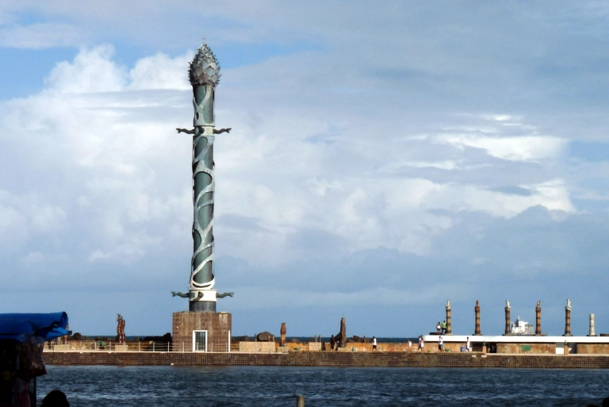

Parque das Esculturas Francisco Brennand

O Parque das Esculturas foi inaugurado em 2000, onde está exposto um conjunto de peças de cerâmica produzidas por Francisco Brennand, em destaque a Coluna de Cristal que possui 32 metros de altura, e é apenas uma amostra do que o visitante pode encontrar na Oficina Brennand.
Para ir até o parque tem 2 opções; ir de barquinho, disponíveis nas escadas do píer do Marco Zero, ou se preferir, também da pra ir de carro, mas leva mais tempo e tem que dar uma volta bem grade para chegar. Também dá pra ir de moto ou bicicleta passando pela Avenida Brasília Teimosa, seguindo até o dique. Aconselho a quem vai de carro de verificar as condições do trecho da avenida que fica no dique.
No local também contamos com um pequeno estacionamento para comodidade e segurança.
Dica: vá no final da tarde pra ver o pôr-do-sol de lá, é uma vista incrível, vale a pena. Não deixe de conhecer também a Oficina Cerâmica Francisco Brennand e o Instituto Ricardo Brennand.